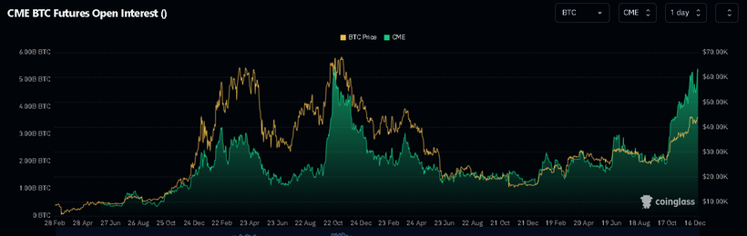
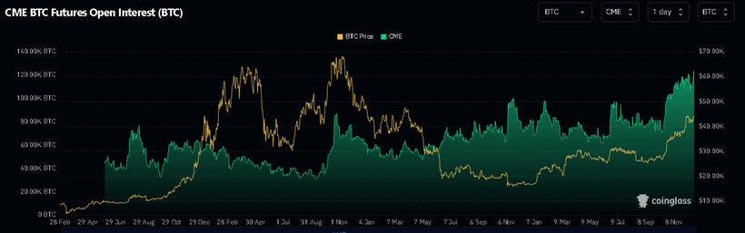
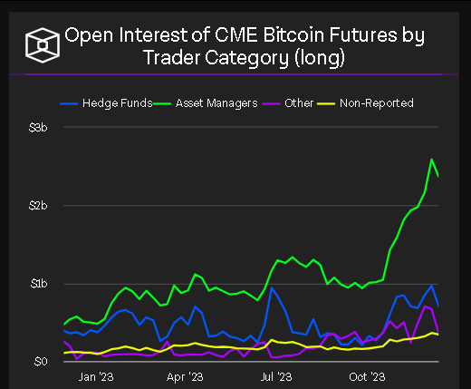
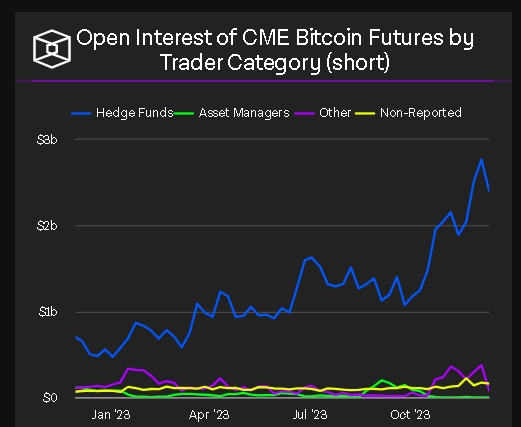
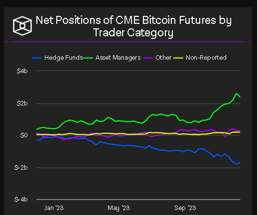
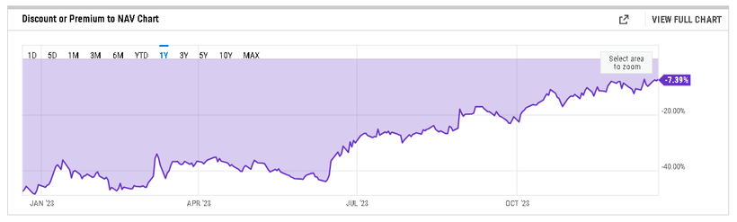
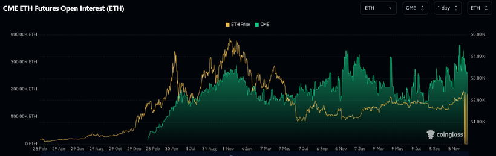
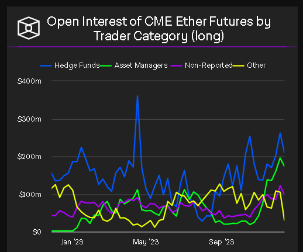

基本上幣圈的人都知道比特幣於2023年會上漲，因此比特幣今年成為最佳表現資產也是理所當然的，一點都不令人意外。而且，基本上所有幣圈人都會持有比特幣，因此大家今年也賺，沒什麼特別。更令我感興趣的是，到底誰是是次牛浪的幕後推手。
若拿比特幣與其他幣的走勢來看，會發現比特幣升幅異常標青。直接留意比特幣市佔率好了。從2023年初的42%一直漲至12月初的55%！證明大部分資金都是流入比特幣，而非其他加密貨幣。
這很有趣，因為在過往的牛浪中，比特幣市佔率都是下跌的。原因有兩個，一來小幣有較大beta及volatility，因此altcoin於牛市漲得比BTC多是正常的；二來牛市會有愈來愈多幣上市，便會降低BTC的市佔率。但今次情況完全相反！即使集中看最近3個月的BTC市佔率，也是由50%以下，升至55%的。
就連ETH的YTD升幅也只有BTC一半。為什麼會這樣呢？主要原因兩個，一來市場憧憬2024年1月Blockrock將發行第一隻BTC現貨ETF。二來，BTC將於2024年4月迎來4年一度的獎勵減半。
早幾個月patreon有提到，傳統很多大戶很想部署BTC，奈何仍沒有好工具，因此，便大量買入BTC proxies，如MARA、RIOT、MSTR等等。但不要忘記，傳統市場中，除了可以買BTC proxies以外，亦可以到CME買BTC futures。
一起來看看CME BTC futures的OI。如下圖：

事實上，很多KOL愛看這張圖，但以上這張圖是沒有多少意義的，因為這個OI是以USD作單位。因此，BTC上漲，這個USD計算的OI當然一起上漲吧，所以OI與BTC價格異常相似。真正要看的是以BTC作單位的OI，如下圖：

會發現，由10月17至10月27，CME OI大幅上升，由72k BTC變103k BTC，足足增加了43%！然後10月27至12月6，OI再漲至119k BTC，即14%。因此，由10月17至12月6，OI漲了65%，而同期BTC則由28k漲至44k，亦是6成左右。
如果再細看CME report，會看到大量加long的類別是「asset manager」，這也合理。另一邊廂，大量加short的類別則為「hedge funds」，奇怪了，hedge fund會走去short BTC嗎？有hedge fund short BTC不出奇，但圖表顯示，BTC愈升，hedge fund short愈多，而且short的量與asset manger long的量相若。這兩點看來就不像hedge fund作風了，更大機會是，hedge fund只是在做market neutral策略，在arb。即在CME short，然後在其他場所hedge。



除了CME BTC futures外，還有很有名的GBTC。一起來看看GBTC的premium discount圖。

GBTC最折讓的時間為2022年12月13，當時為-49%，即嚴重跑輸BTC 49%，因此我一直也很不喜歡它。不過，眨眼間，GBTC的discount已收窄到現時的-7%！
基本上，無論從CME的期貨，或是GBTC這隻trust來看，傳統資金都在瘋狂買！由以上幾個數據，我們已經可以總結，是次BTC牛浪，是由傳統市場資金推動的。
ETH呢？ETH也有CME futures啊。請看下圖：

ETH並不像BTC般OI上漲那麼多，OI量亦沒有創下歷史新高。
此外，ETH的「asset manager」持倉量沒有明顯升高。

而ETHE的discount雖然有收窄，但仍有20%以上的discount。
總括來說，傳統資金已經再慢慢滲透入來，當然有好有壞，好處在於他們的資金會推高幣價；壞處在於，對手增加了，市場會比以前變得有效。換個角度，即beta易賺了，但alpha將會減少。而且，CEX的定價權會下降，而傳統資金的定價權將會慢慢提升。
補充一點，如果BTC現貨ETF實現後，就可以開始博ETH追落後，詳細當然是密切留意這篇文章教會了大家看的數據了！